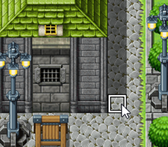
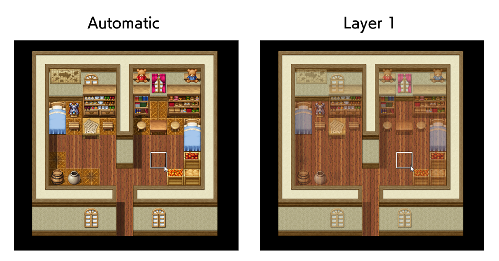

RPG MAKER MZ HELP
Map

Editing Map Designs
Basic Editing Methods
-
Switch to Editing Mode
To edit the design of your map, click the [Map] button on the toolbar (or [Mode] → [Map] in the menu) to switch to Editing Mode.
Selecting Map Data
Click to select the map data you wish to edit in the Map List found at the bottom left of the window. The design of the map will be displayed in the Map View on the right.
Selecting Tiles
Click to select the tile to draw from the Tile Palette. The tile that is currently selected will have a white frame around it. The tiles displayed in the Tile Palette will be switched when you click tabs A through E at the bottom.
You can select multiple tiles to draw at once by drag-selecting them on the Tile Palette. -
Selecting the Drawing Tool and Drawing
Select a tool (from the 5 types below) to use for drawing tiles by clicking on it in the toolbar. Also, tiles will be drawn when you click or drag on the map display area (Map View) on the right side of the window. Each tool can also be selected from the [Draw] Menu.
You can erase tiles that you have drawn by drawing transparent tiles. You can find the transparent tile used for the upper layer in the upper left of the B tab. Pencil
Pencil - Draws the selected tile in the spot that you have clicked.
 Rectangle
Rectangle - The selected tile will be drawn in a rectangular area produced by clicking and dragging the cursor diagonally with the beginning of the drag being the starting point and the end of the drag being the ending point.
- Ellipse
- The selected tile will be drawn in an ellipse within a square area produced by clicking and dragging the cursor diagonally with the beginning of the drag being the starting point and the end of the drag being the ending point.
 Flood Fill
Flood Fill - Tiles will be drawn from the location of the tile you click and on all connected surrounding tiles of the same type.
- Shadow Pen
- Click on a spot with no shadows to add one, and click on a spot with a shadow to delete it.
Hold down the Shift key and drag the cursor to add or delete shadows within a square area diagonally between the cursor's starting and ending points.
-
Eyedropper
Right-click on Map View to copy an existing tile, then left-click to paste the copied content. Right-click and drag to select a range of tiles to copy.
Other Editing Functions
-
Autotile
A feature called [Autotile] is included for the tiles displayed in the A tab of the Tile Palette. With autotiles, one type of tile contains several patterns, and the border of the tile will be adjusted automatically depending on how the tiles are placed. Tiles which have the autotile function are assigned to [A1] through [A4] in the database [Tileset].
Moreover, you can temporarily disable the autotile function by holding [Shift] and drawing tiles or using the eyedropper. -
Autoshadows
Within autotiles, there are some titles for which a shadow will automatically be drawn to the bottom right when placing two or more tiles vertically. However, specific tiles will not have shadows drawn on them.
-
Shadow Pen
The Shadow Pen is a tool that allows you to draw shadows for walls and buildings. You can darken the hue in increments of 1/4th of the size of a tile.
Click the [Shadow Pen] button on the toolbar (or go to [Draw] → [Shadow Pen] in the menu), and click on the Map View. A shadow is drawn by clicking on a part which has no shadow. When clicking a part which already has a shadow, that shadow will be removed.
 -
Upper Layer Tile Special Specifications
- You can layer 2 different types of upper map tiles, B through E.
*When layering a 3rd tile, the 1st upper tile will disappear.
*If the 3rd tile layered is the same as the 2nd tile, the first tile will not disappear.
*Only the tile in the upper left of B can erase all upper tiles. - When a passable tile and an impassable tile are layered, the effect of the tile placed last takes priority.
*Even when a passable ☆ tile is on the bottom, the tile with the ☆ will be displayed on top.
*When a passable ☆ tile is layered, the impassable tile's settings will take priority.
- You can layer 2 different types of upper map tiles, B through E.
-
Lower Layer Tile Special Specifications
Amongst the tiles that are displayed in the [A] tab of the Tile Palette, those items found in [A2] in the tileset's configuration are divided into [Base] (columns 1 to 4 from the left, or the left half) and [Decoration] tiles (columns 5 to 8 from the left, or the right half). Decoration tiles can be placed on top of base tiles.
However, for tilesets which have their [Mode] set to [Field Type] in the [Tileset] settings, if a decoration tile is layered on a tile from the 2nd or 4th base tiles column, the base tile will change to a 1st or 3rd column base tile. -
Map Layer Selection Function
Switches layers in map editing mode. You can select an individual layer to edit without affecting other layers.
While it is usually possible to create maps using [Auto], using each layer for separate purposes allows you to fine-tune your map.
When a layer is selected, the tile placed on the selected layer will be highlighted.
Since only the highlighted tile can be edited, you can use it in situations such as when you want to make batch changes only to the lower layer after placing decorations using upper layer tiles.
The figure shows tiles placed using [Auto] and [Layer 1].
You can see that only the room's floor tiles are being changed in batch with the [Layer 1] settings.- Auto
- Automatically select layer when drawing the map.
- Layer 1
- Layer 1 is selected.
- Layer 2
- Layer 2 is selected.
- Layer 3
- Layer 3 is selected.
- Layer 4
- Layer 4 is selected.